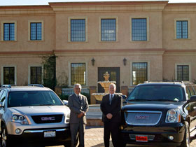
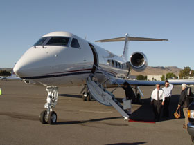
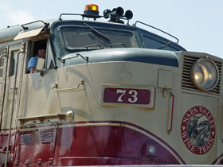

Browse Our Services

Our Vechicles
You can book a GMC Acadia or GMC Denali XL with all of the amenities you need. Both will seat up to 6 passengers and you're guaranteed a luxurious and comfortable ride while enjoying the wine country.
Our Rates
We like to keep it simple and affordable.
Monday - Thurdsay - $50.00 per hour
Friday - Sunday - $70.00 per hour
Gas Surcharge: $30 for local Napa/Sonoma; $40 for Healdsburg/Santa Rosa & $60 for San Francisco/Oakland pickups.
There is a 3% surcharge when paying the balance by credit card. This doesn't apply to balances paid in cash.
Sodas, water & beer are provided. Tasting fees and lunch are not included. Driver gratuity is at your sole discretion and always appreciated.
*Clients are responsible for tasting fees and lunches. Additional fuel charges apply for pick up and drop off outside of Napa and Sonoma. Summer rates: March 16th - November 14th. Winter rates: November 15th - March 15th.
Cancellation Policy:
Cancellations within 4 days of the chartered tour date will be charged the remaining full balance. This fee will not be assessed if the client re-books for another date.
Ask about our Insider Tour Package and Horse Riding/Wine Tasting Package!
How To Book A Tour
If you need more information please feel free to contact us - (888) 608-2366.
FAQ's -
How many wineries should we visit in a day? That's really up to you and the amount of time you want to spend. Our experience has been that 3-4 wineries and lunch makes for a memorable day. After that palate fatigue starts to set in.
Do I need to make appointments? That depends on the winery. Some require appointments no matter the group size according to their use permit or in wanting to keep the experience intimate. Others do not for group sizes under 6. It's always a courtesy to call the wineries when the group size is 6 or more.